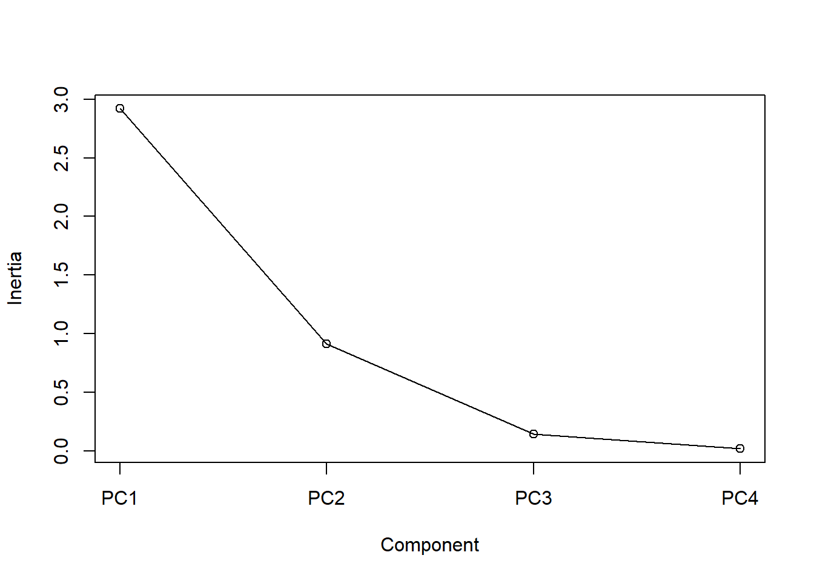
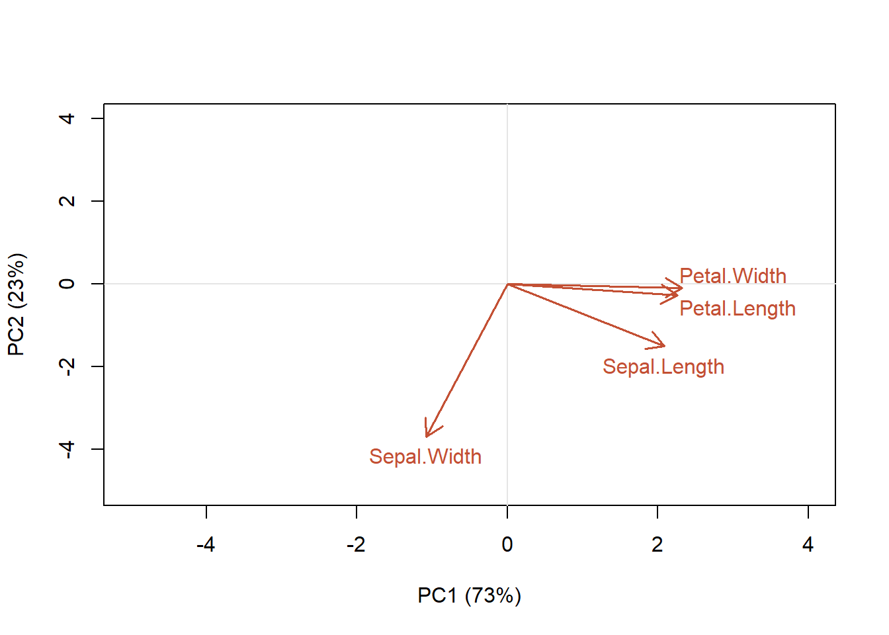
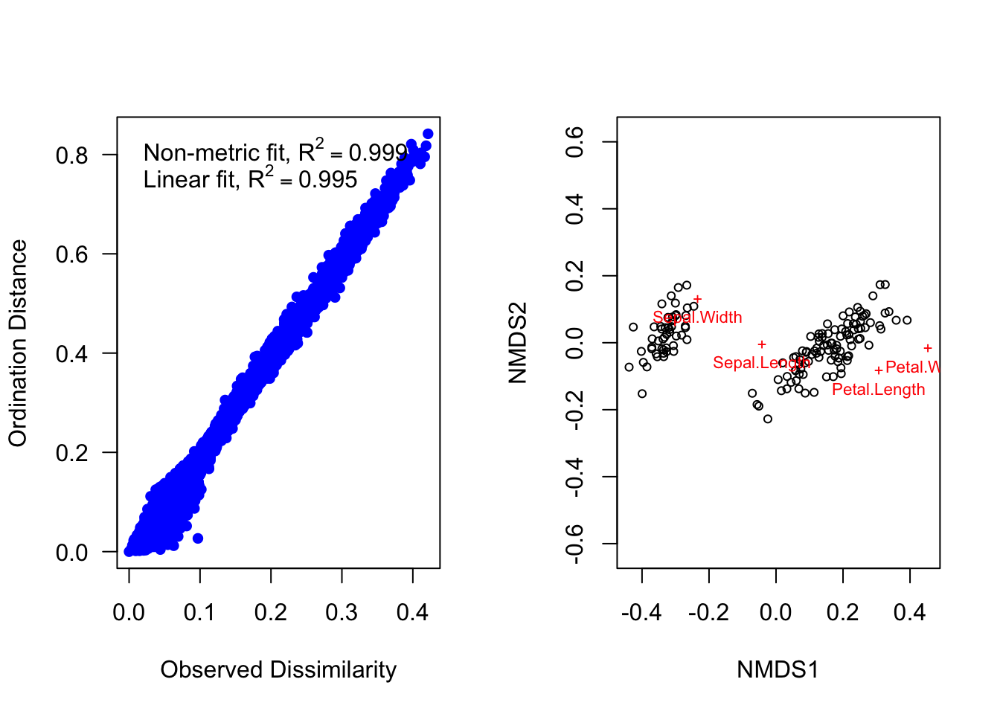

6 Introduction to multivariate analysis
In this module we’ll be disccusing multivariate quantitative methods. Analyses such as linear regression, where we relate a response, y, to a predictor variable, x, are univariate techniques. If we have multiple responses, \(y_1...y_n\), and multiple predictors, \(x_1...x_n\), we need multivariate approaches. For example, we may wish to understand how both precipitation and soil type are related to plant community composition. In this question, we may be tracking the abundance of over a dozen different species and many different sites with different types of soil, precipitation and other environmental factors. You can easily see that this is not a situation that ordinary univariate approaches are designed to handle!
There are many types of multivariate analysis, and in this module and the next, we will only describe some of the most common ones. We can think of these different types of analysis as laying at different ends of a spectrum of treating the data as discrete vs continuous, and relying on identfying a reponse variable a priori versus letting the “data tell us” about explanatory features, i.e., latent variables (Fig. 6.1.
Figure 6.1: Types of multivariate analysis
6.1 Multivariate resemblance
The starting point for a lot of the classic multivariate methods is to find metrics that describe how similar two individuals, samples, sites or species might be. A natural way to quantify similarity is to list those characters that are shared. For example, what genetic or morphological features are the same or different between two species? A resemblance measure quantifies similarity by adding up in some way the similarities and differences between two things. We can express the shared characters of objects as either: similarity (S), which quantifies the degree of resemblance or dissimilarity (D) which quantifies the degree of difference.
6.1.1 Binary Similarity metrics
The simplest similarity metric just tallys the number of shared features. This is called a binary similarity metric, since we are just indicating a yes or no for each characteristic of the two things we wish to compare (Table 6.1).
| Attribute | Object 1 | Object 2 | Similarity |
|---|---|---|---|
| Attribute 1 | 1 | 0 | x |
| Attribute 2 | 0 | 1 | x |
| Attribute 3 | 0 | 0 | ✓ |
| Attribute 4 | 1 | 1 | ✓ |
| Attribute 5 | 1 | 1 | ✓ |
| Attribute 6 | 0 | 0 | ✓ |
| Attribute 7 | 0 | 1 | x |
| Attribute 8 | 0 | 0 | ✓ |
| Attribute 9 | 1 | 1 | ✓ |
| Attribute 10 | 1 | 0 | x |
We could also use a shared lack of features as an indicator of similarity. The simple matching coefficient uses both shared features, and shared absent features to quantify similarity as \(S_m=\frac{a+d}{a+b+c+d}\), where a refers to the number of characteristics that object 1 possesses and b is the number that object 2 possesses and so on (see Table 6.2).
| Present | Absent | ||
|---|---|---|---|
| Object 1 | Present | a | b |
| Object 2 | Absent | c | d |
We can further categorize similarity metrics as symmetric, where we regard both shared presence and shared absence as evidence of similarity, the simple matching coefficient, \(S_m\) would be an example of this, or asymmetric, where we regard only shared presence as evidence of similarity (that is, we ignore shared absences).Asymmetric measures are most useful in analyzing ecological community data, since it is unlikely to be informative that two temperature zone communities lack tropical data, or that aquatic environments lack terrestrial species.
The Jaccard index is an asymmetric binary similarity coefficient calculated as \(S_J=\frac{a}{a+b+c}\), while the quite similar Sørenson index is given as \(S_S=\frac{2a}{2a+b+c}\), and so gives greater weight to shared similarities. Both metrics range from 0 to 1, where a value of 1 indicates complete similarity.
Let’s try an example. In the 70s, Watson (1974) compared the zooplankton species present in Lake Erie and Lake Ontario. We can use this information to compare how similar the communities in the two lakes were at this time. We can see that they shared a lot of species (Table 6.3)!
| species | erie | ontario |
|---|---|---|
| 1 | 1 | 1 |
| 2 | 1 | 1 |
| 3 | 1 | 1 |
| 4 | 1 | 1 |
| 5 | 1 | 1 |
| 6 | 1 | 1 |
| 7 | 1 | 1 |
| 8 | 1 | 1 |
| 9 | 1 | 1 |
| 10 | 1 | 1 |
| 11 | 1 | 1 |
| 12 | 1 | 1 |
| 13 | 1 | 1 |
| 14 | 1 | 1 |
| 15 | 1 | 1 |
| 16 | 1 | 1 |
| 17 | 1 | 1 |
| 18 | 1 | 1 |
| 19 | 1 | 0 |
| 20 | 0 | 1 |
| 21 | 0 | 0 |
| 22 | 0 | 0 |
| 23 | 0 | 0 |
| 24 | 0 | 0 |
We can calculate the similarity metrics quite easily using the table() function, where 1 indicates presence and 0 indicates absence. I have stored the information from Table 6.3 in the the dataframe lksp. I’m just going grab the presences and absences, since I don’t need the species names for my calculation.
tlake=table(lksp[,c("erie","ontario")])
tlake ontario
erie 1 0
1 18 1
0 1 4a=tlake[1,1]
b=tlake[1,2]
c=tlake[2,1]
d=tlake[2,2]
S_j=a/(a+b+c)
S_j[1] 0.9S_s=2*a/(2*a+b+c)
S_s[1] 0.9473684When a disimilarity or similarity metric has a finite range, we can simply convert from one to the other. For example, for similarities that range from 1 (identical) to 0 (completely different), dissimilarity would simply be 1-similarity.
6.1.2 Quantitative similarity & dissimilarity metrics
While binary similarity metrics are easy to understand, there are a few problems. These metrics work best when we have a small number of characteristics and we have sampled very well (e.g., the zooplankton in Lake Erie and Ontario). However, these metrics are biased against maximum similarity values when we have lots of charactersitics (or species) and poor sampling.
In addition, we sometimes have more information than just a “yes” or “no” which we could use to further characterize similarity. Quantiative similarity and dissimilarity metrics make use of this information. Some examples of quantitative similarity metrics are: Percentage similarity (Renkonen index), Morisita’s index of similarity (not dispersion) and Horn’s index.
Quantitive dissimilarity metrics are perhaps more commonly used. In this case, we often talk about the “distance” between two things. Distances are of two types, either dissimilarity, converted from analogous similarity indices, or specific distance measures, such as Euclidean distance, which doesn’t have a counterpart in any similarity index. There are many, many such metrics, and obviously, you should choose the most accurate and meaningful distance measure for a given application. Legendre & Legendre (2012) offer a key on how to select an appropriate measure for given data and problem (check their Tables 7.4-7.6). If you uncertain, then choose several distance measures and compare the results.
Euclidean Distance
Perhaps the mostly commonly used, and easiest to understand, dissimilarity, or distance, measure is Euclidian distance. This metric is zero for identical sampling units and has no fixed upper bound.
Euclidean distance in multivariate space is derived from our understanding of distance in a Cartesian plane. If we had two species abundances measured in two different samples, we could then plot the abundance of species 1 and species 2 for each sample on a 2D plane, and draw a line between them. This would be our Euclidean distance: the shortest path between the two points (Fig. 6.2).
Figure 6.2: Euclidean Distance
We know that to calculate this distance we would just use the Pythagorean theorem as \(c=\sqrt{a^2+b^2}\). To generalize to n species we can say \(D^E_{jk}=\sqrt{\sum^n_{i=1}(X_{ij}-X_{ik})^2}\), where Euclidean distance between samples j and k, \(D^E_{jk}\), is calculated by summing over the distance in abundance of each of n species in the two samples.
Let’s try an example. Given the species abundances in Table 6.4, we can calculate the squared difference in abundance for each species, and sum that quantity.
| sample j | sample k | \((X_j-X_k)^2\) | |
|---|---|---|---|
| Species 1 | 19 | 35 | 256 |
| Species 2 | 35 | 10 | 625 |
| Species 3 | 0 | 0 | 0 |
| Species 4 | 35 | 5 | 900 |
| Species 5 | 10 | 50 | 1600 |
| Species 6 | 0 | 0 | 0 |
| Species 7 | 0 | 3 | 9 |
| Species 8 | 0 | 0 | 0 |
| Species 9 | 30 | 10 | 400 |
| Species 10 | 2 | 0 | 4 |
| TOTAL | 131 | 113 | 3794 |
Then all we need to do is to take the square root of the sum to obtain the Euclidean distance. Did you get the correct answer of 61.6? Of course, R makes this much easier, I can calculate Euclidan distance using the dist() function, after creating a matrix of the two columns of species abundance data from my original eu dataframe.
dist(rbind(eu$j[1:10], eu$k[1:10]), method = "euclidean") 1
2 61.59545There are many other quantitative dissimilarity metrics. For example, Bray Curtis dissimilarity is frequently used by ecologists to quantify differences between samples based on abundance or count data. This measure is usually applied to raw abundance data, but can be applied to relative abundances. It is calculated as: \(BC_{ij}=1-\frac{C_{ij}}{S_{i}+S_{j}}\), where \(C_{ij}\) is the sum over the smallest values for only those species in common between both sites, \(S_{i}\) and \(S_{j}\) are the sum of abundances at the two sites. This metric is directly related to the Sørenson binary similarity metric, and ranges from 0 to 1, with 0 indicating complete similarity. This is not at distance metric, and so, is not appropriate for some types of analysis.
6.1.3 Comparing more than two communities/samples/sites/genes/species
What about the situation where we want to compare more than two communtiies, species, samples or genes? We can simply generate a dissimilarity or similarity matrix, where each pairwise comparison is given.
In the species composition matrix below (Table 6.5), sample A and B do not share any species, while sample A and C share all species but differ in abundances (e.g. species 3 = 1 in sample A and 8 in sample C). The calculation of Euclidean distance using the dist() function produces a lower triangular matrix with the pairwise comparisons (I’ve included the distance with the sample itself on the diagonal).
The Euclidan distance values suggest that A and B are the most similar! Euclidean distance puts more weight on differences in species abundances than on difference in species presences. As a result, two samples not sharing any species could appear more similar (with lower Euclidean distance) than two samples which share species that largely differ in their abundances.
| sample A | sample B | sample C | |
|---|---|---|---|
| species 1 | 0 | 1 | 0 |
| species 2 | 1 | 0 | 4 |
| species 3 | 1 | 0 | 8 |
dist(t(meu[2:4]), method="euclidean", diag=TRUE) A B C
A 0.000000
B 1.732051 0.000000
C 7.615773 9.000000 0.000000There are other disadvantages as well, and in general, there is simply no perfect metric. For example, you may dislike the fact that Euclidean distance also has no upper bound, and so it becomes difficult to understand how similar two things are (i.e., the metric can only be understood in a relative way when comparing many things, Sample A is more similar to sample B than sample C, for example). You could use a Bray-Curtis dissimilarity metric, which is quite easy to interpret, but this metric will also confound differences in species presences and differences in species counts (Greenacre 2017). The best policy is to be aware of the advantages and disadvantages of the metrics you choose, and interpret your analysis in light of this information.
6.1.4 R functions
There are a number of functions in R that can be used to calculate similarity and dissimilarity metrics. Since we are usually not just comparing two objects, sites or samples, these functions can help make your calculations much quicker when you are comparing many units.
dist() offers a number of distance measures (e.g. euclidean,canberra and manhattan). The result is the distance matrix which gives the dissimilarity of each pair of objects, sites or samples. the matrix is an object of the class dist in R.
vegdist() (library vegan). The default distance used in this function is Bray-Curtis distance, which is considered more suitable for ecological data.
dsvdis() (library labdsv) Offers some other indices than vegdist (e.g. ruzicka (or Růžička), a quantitative analogue of Jaccard, and roberts.
For full comparison of dist, vegdist and dsvdis,see http://ecology.msu.montana.edu/labdsv/R/labs/lab8/lab8.html.
dist.ldc() (library adespatial) Includes 21 dissimilarity indices described in Legendre & De Cáceres (2013), twelve of which are not readily available in other packages. Note that Bray-Curtis dissimilarity is called percentage difference (method = “percentdiff”).
designdist() (library vegan) Allows one to design virtually any distance measure using the formula for their calculation.
daisy() (library cluster) Offers euclidean, manhattan and gower distance.
distance() (library ecodist) Contains seven distance measures, but the function is more for demonstration (for larger matrices, the calculation takes rather long).
6.2 Cluster Analysis
When we have a large number of things to compare, an examination of a matrix of similarlity or dissimilatiry metrics can be tedious or even impossible to do. One way to visualize the similarity among units is to use some form of cluster analysis. Clustering is the grouping of data objects into discrete similarity categories according to a defined similarity or dissimilarity measure.
We can contrast clustering, which assumes that units (e.g., sites, communities, species or genes) can be grouped into discrete categories based on similarity, with ordination, which treats the similarity between units as a continuous gradient (we’ll discuss ordination in section 6.3). We can use clustering to do things like discern whether there are one or two or three different communities in three or four or five sampling units. It is used in many fields, such as machine learning, data mining, pattern recognition, image analysis, genomics, systems biology, etc. Machine learning typically regards data clustering as a form of unsupervised learning, or from our figure above (Fig 6.1), as a technique that uses “latent” variables because we are not guided by a priori ideas of which variables or samples belong in which clusters.
6.2.1 Hierarchical clustering: groups are nested within other groups.
Perhaps the most familiar type of clustering is hierarchical. There are two kinds: divisive and agglomerative. In the divisive method, the entire set of units is divided into smaller and smaller groups. The agglomerative method starts with small groups of few units, and groups them into larger and larger clusters, until the entire data set is sampled (Pielou, 1984). Of course, once you have more than two units, you need some way to assess similarlity between the clusters. There are a couple of different methods here. Single linkage assigns the similairty between clusters to the most similar units in each cluster. Complete linkage uses the similarity between the most dissmilar units in each cluster, while average linkage averages over all the units in each cluster (Fig. 6.3).
Figure 6.3: Different methods of determining similarity between clusters
Single Linkage Cluster Analysis
Single linkage cluster analysis is one of the easiest to explain. It is hierarchical, agglomerative technique. We start by creating a matrix of similarity (or dissimilarity) indices between the units we want to compare.
Then we find the most similar pair of samples, and that will form the 1st cluster. Next, we find either: (a) the second most similar pair of samples or (b) highest similarity between a cluster and a sample, or (c) most similar pair of clusters, whichever is greatest. We then continue this process until until there is one big cluster. Remember that in single linkage, similarity between two clusters = similarity between the two nearest members of the clusters. Or if we are comparing a sample to a cluster, the similarity is defined as the similarity between sample and the nearest member of the cluster.
cls=data.frame(a=c(5,6,34,1,12),b=c(10,5,2,3,4), c=c(10,59,32,3,40), d=c(2,63,10,29,45), e=c(44,35,40,12,20))
clsd=dist(t(cls), method="euclidean")
round(clsd,0) a b c d
b 33
c 60 71
d 76 76 36
e 51 62 48 66Figure 6.4: Example of using a dissimilarity matrix to construct a single-linkage cluster diagra
6.2.2 R functions
Agglomerative approach (bottom-up)
hclust() calculates hierarchical cluster analysis and has it’s own plot function.
agnes() (library cluster) Contains six agglomerative algorithms, some not included in hclust.
Divisive approach (top-down) diana()
6.2.3 How many clusters?
The hiearchical methods just keep going until all objects are included (agglomerative methods), or are each in their own group (divisive methods). However, neither endpoint is very useful. How do we select the number of groups? There are metrics and techniques to make this decision more objective, however, in this introduction, we’ll just mention that, for hierarchical methods, you can determine the number of groups a given degree of similarity, or set the number of groups and find the degree of similarity that results in that number of groups. Let’s try. We’ll use the cutree() function that works on cluster diagrams produced by the hclust() function (Fig. @ref{fig:hclustfig)).
If we set our dissimilarity threshold at 40, we find that there are three groups: a&b, c&d, and e in its own group.
Figure 6.5: Cluster diagram produced by the function hclust with cut-off line at euclidean distance=40 for group membership
a b c d e
1 1 2 2 3 6.2.4 Other clustering methods
There are other means of clustering data of course. Partitional clustering is the division of data objects into non-overlapping subsets, such that each data object is in exactly one subset
6.2.4.1 K-means clustering
In one version of this, k-means clustering, each cluster is associated with a centroid (center point), and each data object is assigned to the cluster with the closest centroid. In this method, the number of clusters, K, must be specified in advance. Our method is:
- Choose the number of K clusters
- Select K points as the initial centroids
- Calculate the distance of all items to the K centroids
- Assign items to closest centroid
- Recompute the centroid of each cluster
- Repeat from (3) until clusters assignments are stable
K-means has problems when clusters are of differing sizes and densities, or are non-globular shapes. It is also very sensitive to outliers.
6.2.4.2 Fuzzy C-Means Clustering
In contrast to strict (or hard) clustering approaches, fuzzy (soft) clustering methods allow multiple cluster memberships of the clustered items.
This is commonly achieved by assigning to each item a weight of belonging to each cluster. Thus, items at the edge of a cluster, may be in a cluster to a lesser degree than items at the center of a cluster. Typically, each item has as many coefficients (weights) as there are clusters that sum up for each item to one.
6.2.5 Exercise: Cluster analysis of isotope data
Our first step is to download and import the dataset “Dataset_S1.csv” from Perkins et al. 2014 (see url below). This data contains δ15N and δ13C signatures for species from different food webs. Unfortunately, this data is saved in an .xlsx file.
To read data into R one of the easiest options is to use the read.csv() function with the argument on a .csv file. These Comma Separated Files are one of your best options for reproducible research. They are human readable and easily handled by almost every type of software. In contrast Microsoft Excel uses a propriatory file format, is not fully backwards compatible, and although widely used, is not human readable. As a result, we need special tools to access this file outside of Microsoft software products
We’ll download the data set using download.file(), and read it using the R library openxlsx (see example below).Once you have successfully read your data file into R, take a look at it! Type iso (or whatever you named your data object) to see if the data file was read in properly. Some datasets will be too large for this approach to be useful (the data will scroll right off the page). In that case, there are a number of commands to look at a portion of the dataset. You could use a command like names(iso).
One of the best things to do is plot the imported data. Of course, this is not always possible with very large datasets, but this set should work. Use the plot() function plotting δ15N vs δ13C to take a quick look.
library(openxlsx)
urlj="https://doi.org/10.1371/journal.pone.0093281.s001"
download.file(urlj, "p.xlsx")
iso=read.xlsx("p.xlsx")plot(iso$N~iso$C, col=as.numeric(as.factor(iso$Food.Chain)),xlim=c(-35, 0), pch=as.numeric(as.factor(iso$Species)), xlab="δ13C", ylab="δ15N")
legend("topright", legend=unique(as.factor(iso$Food.Chain)),pch=1,
col=as.numeric(unique(as.factor(iso$Food.Chain))), bty="n", title="Food chain")
legend("bottomright",legend=as.character(unique(as.factor(iso$Species))), pch=as.numeric(unique(as.factor(iso$Species))), bty="n")Figure 6.6: Isotope data from Perkins et al (2014)
We are going to use this data set to see if a cluster analysis on δ15N and δ13C can identify the foodweb. That is we are going to see if the latent variables identified by our clustering method match up to what we think we know about the data. Our first step is to create a dissimilarity matrix, but even before this, we must select that part of the data that we wish to use, just the δ15N and δ13C data, not the other components of the dataframe.
In addition, our analysis will be affected by the missing data. So let’s get remove those rows with missing data right now using the complete.cases() function. The function returns a value of TRUE for every row in a dataframe that no missing values in any column. So niso=iso[complete.cases(mydata),], will be a new data frame with only complete row entries.
The function dist() will generate a matrix of the pairwise Euclidean distances between pairs of observations. Now that you have a dissimilarity matrix, you complete a cluster analysis. The function hclust() will produce a data frame that can be sent to the plot() function plotted to visualize the recommended clustering. The method used to complete the analysis is indicated below the graph. Please adjust the arguments of the function to complete a single linkage analysis (look at help(hclust)) to determine the method to do this).
str(iso)'data.frame': 165 obs. of 7 variables:
$ Replicate : num 1 2 3 4 5 6 7 8 9 10 ...
$ Food.Chain : chr "Wheat" "Wheat" "Wheat" "Wheat" ...
$ Species : chr "Plant" "Plant" "Plant" "Plant" ...
$ Tissue : chr "Leaf" "Leaf" "Leaf" "Leaf" ...
$ Lipid.Extracted: chr "No" "No" "No" "No" ...
$ C : num -30.1 -31.7 -30.1 -30.9 -31 ...
$ N : num -3.47 -2.68 3.42 1.27 6.2 ...diso<-dist((iso[,c("C","N")]), method="euclidean")
p=hclust(diso,method="single")
plot(p, cex=0.5,main="")Figure 6.7: Cluster figure of isotope data from Perkins et al. 2014)
When you graph your cluster using plot(), you notice that there are many individual measurements, but there are only a few large groups. Does it look like there is an outlier? If so, you may want to remove this point from the data set, and then rerun the analysis. The row numbers are used as labels by default, so this is easy to do (niso=niso[-5,]). Remember to remove the point from the dataframe that has all the food chain info in it, otherwise you will have problems plotting later.
When you examine the data set, you noted that there are 4 Food.chain designations. We will use the cutree() function to cut our cluster tree to get the desired number of groups (4), and then save the group numbers to a new column in our original dataframe. For example, iso$clust<- cutree(p,4).We can then plot the data using colours and symbols to see how well our clustering works
niso=iso[complete.cases(iso),]
niso=niso[-5,]
net=niso[,c("C","N")]
diso<-dist((net), method="euclidean")
p=hclust(diso, method="single")
plot(p,labels=FALSE, main="")Figure 6.8: Single linkage clustering on Perkins et al (2014) data with outlier removed
niso$clust<-cutree(p,k=4)
plot(iso$N~iso$C, col=as.numeric(as.factor(niso$clust)),xlim=c(-35, 0), pch=as.numeric(as.factor(niso$Species)), xlab="δ13C", ylab="δ15N")
legend("topright", legend=unique(as.factor(niso$clust)),pch=1,
col=as.numeric(unique(as.factor(niso$clust))), bty="n", title="cluster")
legend("bottomright",legend=as.character(unique(as.factor(niso$Species))), pch=as.numeric(unique(as.factor(niso$Species))), bty="n",title="Species")Figure 6.9: Data from Perkins et al (2014) data with grouping from single linkage clustering superimposed
It doesn’t look like our cluster algorithm is matching up with our Food.chain data categories very well. Wheat- and Nettle-based distinguished, which makes sense when you consider that both of these plants use a C3 photosynthesis system. If you are not happy with the success of this clustering algorithm you could try other variants(.g., “complete” linkage) and a different number of groups.
Let’s try a non-hierarchical cluster analysis on the same data to see if it works better. The kmeans() function requires that we select the required number of clusters ahead of time (we want 4, so kclust=kmeans(niso[,c(“C,” “N”)], 4)), we can then save the assigned clusters to our dataframe and plot in a similar wayFigure 6.10: K means clustering on Perkins et al (2014) data
It looks like kmeans has the same problem with distinguishing C3 plant-based foodwebs. But we still get three groups that roughly map onto our information about the data.
6.3 Ordination
While cluster analysis let’s us visualize multivariate data by grouping objects into dscrete categories, ordination uses continuous axes to help us accomplish the same task. Physicists grumble if space exceeds four dimensions, while biologists typically grapple with dozens of dimensions (species and/or samples). In effect, we “order” this multivariate data in order to produce a low dimensional picture (i.e., a graph in 1-3 dimensions). Just like cluster analysis, we will use similarity metrics to accomplish this. Also like cluster anlaysis, simple ordination is not a statistical test: it is a method of visualizing data.
Essentially, we find axes in the data that explain a lot of variation, and rotate so we can use that axis as one of our dimensions of visual representation(Fig. 6.12). Another way to think about it, is that we are going to summarize the raw data, which has many variables, p, by a smaller set of synthetic variables, k (Fig. 6.11). If the ordination is informative, it reduces a large number of original correlated variables to a small number of new uncorrelated variables. But it really is a bit of a balancing act between clarity of representation, ease of understanding, and oversimiplication. We will lose information in this data reduction, and if that information is important, then we can make the multivariate data harder to understand! Also note that if the original variables are not correlated, then we won’t gain anything with ordinaton.
Figure 6.11: Ordination as data reduction. We summarize data with many variables (p) by a smaller set of derived or synthetic variables (k)
Figure 6.12: Synthetic axis rotation in ordination
There are lots of different ways to perform an ordination, but most methods are based on extracting the eigenvalues of a similarity matrix. The four most commonly used methods are: Principle Component Analysis (PCA), which is the main eigenvector-based method, Correspondence Analysis (CA) which is used used on frequency data, Principle Coordinate Analysis (PCoA) which works on dissimilarity matrices, and Non Metric Multidimensional Scaling (NMDS) which is not an eigenvector method, instead it represents objects along a predetermined number of axes.
| Method | Distance | Variables |
|---|---|---|
| Principal component analysis (PCA) | Euclidean | Quantitative data |
| Correspondence analysis (CA) | X^2 | Non-negative, quantitiative or binary data; species frequencies or presence/absence data |
| Principal coordinate analysis (PCoA), metric (multidimensional) scaling, classical scaling | Any | Quantitative, semiquantitative, qualitative, or mixed |
| Nonmetric multidimensional scaling (nMDS) | Any | Quantitative, semiquantitative, qualitative, or mixed |
Legendre & Legendre (2012) provide a nice summary of when you should use each method Table 6.6
6.3.1 Principal Components Analysis (PCA)
Principal Components Analysis is probably the most widely-used and well-known of the standard multivariate methods. It was invented by Pearson (1901) and Hotelling (1933), and first applied in ecology by Goodall (1954) under the name “factor analysis” (NB “principal factor analysis” is also a synonym of PCA). Like most ordination methods, PCA takes a data matrix of n objects by p variables, which may be correlated, and summarizes it by uncorrelated axes (principal components or principal axes) that are linear combinations of the original p variables. The first k components display as much as possible of the variation among objects. PCA uses Euclidean distance calculated from the p variables as the measure of dissimilarity among the n objects, and derives the best possible k-dimensional representation of the Euclidean distances among objects, where \(k < p\) .
We can think about this spatially. Objects are represented as a cloud of n points in a multidimensional space with an axis for each of the p variables. So the centroid of the points is defined by the mean of each variable, and the variance of each variable is the average squared deviation of its n values around the mean of that variable (i.e., \(V_i= \frac{1}{n-1}\sum_{m=1}^{n}{(X_{im}-\bar{X_i)}^2}\)). The degree to which the variables are linearly correlated is given by their covariances \(C_{ij}=\frac{1}{n-1}\sum_{m=1}^n{(X_{im}-\bar{X_i})(X_{jm}-\bar{X_j})}\). The objective of PCA is to rigidly rotate the axes of the p-dimenional space to new positions (principal axes) that have the following properties: they are ordered such that principal axis 1 (or the principal component has the highest variance, axis 2 has the next highest variance etc, and the covariance among each pair of principal axes is zero (the principal axes are uncorrelated) (Fig. 6.13).

Figure 6.13: Selecting the synthetic axes in ordination
So our steps are to compute the variance-covariance matrix of the data, calculate the eigenvalues of this matrix and then calculate the associated eigenvectors. Then, the jth eigenvalue is the variance of the jth principle component and the sum of all the eigenvalues is the total variance explained. The proportion of variance explained by each component is the eigenvalue for the component divided by the total variance explained, while the loadings are the eigenvectors. Dimensionality reduction is the same as first rotating the data with the eigenvalues to be aligned with the principle components, then using only the components with the greatest eigenvalues.
6.3.2 Exercise: PCA on the iris data
Let’s try an example. We’re going to use a sample dataset in R and the base R version of PCA to start exploring this data analysis technique. Get the iris dataset into memory by typing “data(“iris”). Take a look at this dataset using the head(), str() or summary() functions. For a multivariate data set, you would like to take a look at the pairwise correlations. Remember that PCA can’t help us if the variables are not correlated. Let’s use the pairs() function to do this
data("iris")
str(iris); summary(iris[1:4])'data.frame': 150 obs. of 5 variables:
$ Sepal.Length: num 5.1 4.9 4.7 4.6 5 5.4 4.6 5 4.4 4.9 ...
$ Sepal.Width : num 3.5 3 3.2 3.1 3.6 3.9 3.4 3.4 2.9 3.1 ...
$ Petal.Length: num 1.4 1.4 1.3 1.5 1.4 1.7 1.4 1.5 1.4 1.5 ...
$ Petal.Width : num 0.2 0.2 0.2 0.2 0.2 0.4 0.3 0.2 0.2 0.1 ...
$ Species : Factor w/ 3 levels "setosa","versicolor",..: 1 1 1 1 1 1 1 1 1 1 ... Sepal.Length Sepal.Width Petal.Length Petal.Width
Min. :4.300 Min. :2.000 Min. :1.000 Min. :0.100
1st Qu.:5.100 1st Qu.:2.800 1st Qu.:1.600 1st Qu.:0.300
Median :5.800 Median :3.000 Median :4.350 Median :1.300
Mean :5.843 Mean :3.057 Mean :3.758 Mean :1.199
3rd Qu.:6.400 3rd Qu.:3.300 3rd Qu.:5.100 3rd Qu.:1.800
Max. :7.900 Max. :4.400 Max. :6.900 Max. :2.500 pairs(iris[1:4],main="Iris Data", pch=19, col=as.numeric(iris$Species)+1)Figure 6.14: correlation atrix for the iris data
The colours let us see the data for each species, the plots are the pairwise plotting of each pair of the 4 variables (Fig. 6.14). Do you see any correlations?
If there seem to be some correlations we might use PCA to visualize the 4 dimensional variable space. Let’s rush right in and use the prcomp() function to run a PCA on the numerical data in the iris dataframe. Save the output from the function to a new variable name so you can look at it when you type that name. The str() function will show you what the output object includes. If you use the summary() function, R will tell you what proportion of the total variance is explained by each axis.
There is a problem though, let’s examine the variance in the raw data. Use the apply() function to quickly calculate the variance in each of the numeric columns of the data as apply(iris[,1:3], 1, var). What do you see? Are the variances of each the columns comparable?
pca <- prcomp(iris[,1:4])
summary(pca)Importance of components:
PC1 PC2 PC3 PC4
Standard deviation 2.0563 0.49262 0.2797 0.15439
Proportion of Variance 0.9246 0.05307 0.0171 0.00521
Cumulative Proportion 0.9246 0.97769 0.9948 1.00000apply(iris[,1:4], 2, var)Sepal.Length Sepal.Width Petal.Length Petal.Width
0.6856935 0.1899794 3.1162779 0.5810063 Using covariances among variables only makes sense if they are measured in the same units, and even then, variables with high variances will dominate the principal components. These problems are generally avoided by standardizing each variable to unit variance and zero mean as \(X_{im}^{'}=\frac{x_{im}-\bar{X_i}}{sd_i}\) where sd is the standard deviation of variable i. After standardizaton, the variance of each variable is 1 and the covariances of the standardized variables are correlations.
If you look at the help menu, the notes for the use of prcomp() STRONGLY recommend standardizing the data. To do this there is a built in option. We just need to set scale=TRUE. Let’s try again with data standardization. Save your new PCA output to a different name. We’ll compare to the unstandardized data in a moment. Take a look at the summary.
p <- prcomp(iris[,1:4], scale=TRUE)
summary(p)Importance of components:
PC1 PC2 PC3 PC4
Standard deviation 1.7084 0.9560 0.38309 0.14393
Proportion of Variance 0.7296 0.2285 0.03669 0.00518
Cumulative Proportion 0.7296 0.9581 0.99482 1.00000Now we need to determine how many axes to use to interpret our analysis. For 4 variables it is easy enough to just look that the amount of variance. For larger numbers of variables a plot can be useful. The screeplot() function will output the variance explained by each of the principle component axes, and you can make a decision based on that (e.g., screeplot(pca2, type=“lines”)).
An ideal curve should be steep, then bend at an “elbow” — this is your cutting-off point — and after that flattens out. To deal with a not-so-ideal scree plot curve you can apply the Kaiser rule: pick PCs with eigenvalues of at least 1. Or you can select using the proportion of variance where the PCs should be able to describe at least 80% of the variance.

It looks like synthetic axes 1 & 2 explain most of the variation. So let’s plot those out. A PCA plot displays our samples in terms of their position (or scores) on the new axes. We can add information about how much variation each axis explains, and colour our points to match species identity. In this 2D representation of 4 dimensional space, it looks like species versicolor and viriginica group together (Fig. 6.15).

Figure 6.15: PCA plot for the iris data
| PC1 | PC2 | PC3 | PC4 | |
|---|---|---|---|---|
| Sepal.Length | 0.52 | -0.38 | 0.72 | 0.26 |
| Sepal.Width | -0.27 | -0.92 | -0.24 | -0.12 |
| Petal.Length | 0.58 | -0.02 | -0.14 | -0.80 |
| Petal.Width | 0.56 | -0.07 | -0.63 | 0.52 |
We can see that a lot of information is coming from the petal variables for PC1, but less from the sepal variables (Table ??).
We can plot this out to show how strongly each variable affects each principle component (or synthetic axis). We can see that petal width and length are aligned along the PC1 axis, while PC2 explains more variation in sepal width (Fig @ref(fig: loadplot)).

To interpret the variable plot remember that positively correlated variables are grouped close together (e.g., petal length and width). Variables with about a 90 angle are probably not correlated, while negatively correlated variables are positioned on opposite sides of the plot origin (~180 angle; opposed quadrants). However, the direction of the axes is arbitrary! The distance between variables and the origin measures the contribution of the variables to the ordination. A shorter arrow indicates its less importance for the ordination. Variables that are away from the origin are well represented. Avoid the mistake of interpreting the relationships among variables based on the proximities of the apices (tips) of the vector arrows instead of their angles in biplots.
Another way to portray this imformation is to create a biplot which, in addition to the coordinates of our samples on the synthetic axes PC1 and PC2, also provides information about how the variables align along the synthetic axes. (Fig (fig:pactwo).
I should note that I have used an arbitrary scaling to display the variable loadings on each axis. Some of the R packages will use a specific scaling that will emphasize particular parts of the plot, either preserving the Euclidean distances between samples or the correlations/covariances between variables (e.g., vegan).
Figure 6.16: PCA plot for the iris data
Principal components analysis assumes the relationships among variables are linear, so that the cloud of points in p-dimensional space has linear dimensions that can be effectively summarized by the principal axes. If the structure in the data is nonlinear (i.e., the cloud of points twists and curves its way through p-dimensional space), the principal axes will not be an efficient and informative summary of the data.
For example, in community ecology, we might use PCA to summarize variables whose relationships are approximately linear or at least monotonic (e..g, soil properties might be used to extract a few components that summarize main dimensions of soil variation). However, in general PCA is generally not useful for ordinating community data because relationships among species are highly nonlinear.
This nonlinearity can leaad to characterisitc artifacts, where, for example, community trends along environmental gradients appear as “horseshoes” in PCA ordinations because low species density at opposite extremes of an environmental gradiant appear relatively close together.
6.3.3 Principle Coordinates Analysis (PCoA)
The PCoA method may be used with all types of distance descriptors, and so might be able to avoid sum problems of PCA. Although, a PCoA computed on a Euclidean distance matrix gives the same results as a PCA conducted on the original data
6.3.3.1 R functions for PCoA
- cmdscale()(stats) -base R, no package needed
- smacofSym() (library smacof)
- wcmdscale()(vegan)
- pco()(ecodist)
- pco()(labdsv)
- pcoa()(ape)
- dudi.pco()(ade4)
6.3.4 Nonmetric Multidimensional Scaling (NMDS)
Like PCoA, the method of nonmetric multidimensional scaling (nMDS), produces ordinations of objects from any resemblance matrix. However, nMDS compresses the distances in a non-linear way and its algorithm is computer-intensive, requiring more computing time than PCoA. PCoA is faster for large distance matrices.
This ordinaton method does not to preserve the exact dissimilarities among objects in an ordination plot, instead it represent as well as possible the ordering relationships among objects in a small and specified number of axes. Like PCoA, nMDS can produce ordinations of objects from any dissimilarity matrix.The method can also cope with missing values, as long as there are enough measures left to position each object with respect to a few others. nMDS is not an eigenvalue technique, and it does not maximise the variability associated with individual axes of the ordination.
In this computational method the steps are:
Specify the desired number m of axes (dimensions) of the ordination.
Construct an initial configuration of the objects in the m dimensions, to be used as a starting point of an iterative adjustment process. (tricky: end result may depend on this. A PCoA ordination may be a good start. Otherwise, try many independent runs with random initial configurations)
Try to position the objects in the requested number of dimensions in such a way as to minimize how far the dissimilarities in the reduced-space configuration are from being monotonic to the original dissimilarities in the association matrix
The adjustment goes on until the stress value cannot be lowered, or until it reaches a predetermined low value (tolerated lack-of-fit).
Most NMDS programs rotate the final solution using PCA, for easier interpretation.
NMDS often achieves a less deformed representation of the dissimilarity relationships among objects than a PCoA in the same number of dimensions. We can use a Shephard plot to get information about the distortion of representation. A Shepard diagram compares how far apart your data points are before and after you transform them (ie: goodness-of-fit) as a scatter plot. On the x-axis, we plot the original distances. On the y-axis, we plot the distances output by a dimension reduction algorithm. A really accurate dimension reduction will produce a straight line. However since information is almost always lost during data reduction, at least on real, high-dimension data, so Shepard diagrams rarely look this straight.
Let’s try this for the iris data. We can evaluate the quality of the NMDS solution by checking the Shephard plot as : stressplot(nMDS, main = “Shepard plot”). In addition to the original dissimilarity and ordination distance, the plot displays two correlation-like statistics on the goodness of fit. The nonmetric fit is given by \(R^2\), while he “linear fit” is the squared correlation between fitted values and ordination distances (Fig. ??). There is some deformation here, but in general the representation is not so bad.
Loading required package: permuteLoading required package: latticeThis is vegan 2.5-7Run 0 stress 0.03775523
Run 1 stress 0.0553735
Run 2 stress 0.04367521
Run 3 stress 0.04804007
Run 4 stress 0.03775525
... Procrustes: rmse 1.133709e-05 max resid 3.616212e-05
... Similar to previous best
Run 5 stress 0.03775522
... New best solution
... Procrustes: rmse 7.621845e-06 max resid 7.564749e-05
... Similar to previous best
Run 6 stress 0.05918357
Run 7 stress 0.06031974
Run 8 stress 0.03775524
... Procrustes: rmse 6.321677e-06 max resid 2.684336e-05
... Similar to previous best
Run 9 stress 0.04355784
Run 10 stress 0.04367522
Run 11 stress 0.05059727
Run 12 stress 0.03775521
... New best solution
... Procrustes: rmse 3.167733e-06 max resid 1.37392e-05
... Similar to previous best
Run 13 stress 0.05361269
Run 14 stress 0.05317214
Run 15 stress 0.04804014
Run 16 stress 0.03775526
... Procrustes: rmse 1.217405e-05 max resid 5.425564e-05
... Similar to previous best
Run 17 stress 0.03775524
... Procrustes: rmse 8.064894e-06 max resid 3.494195e-05
... Similar to previous best
Run 18 stress 0.04804008
Run 19 stress 0.03775522
... Procrustes: rmse 3.889243e-05 max resid 0.0001678761
... Similar to previous best
Run 20 stress 0.06144867
*** Solution reached
nMDS often achieves a less deformed representation of the dissimilarity relationships among objects than a PCoA in the same number of dimensions. But nMDS is a computer-intensive iterative technique exposed to the risk of suboptimum solutions. In comparison, PCoA finds the optimal solution by eigenvalue decomposition.
6.3.4.1 R functions for NMDS
metaMDS() (vegan)
isoMDS( ) (MASS)
6.3.5 Exercise: Ordination
We are going to use the vegan package, and some built in data with it to run the nMDS. varespec is a data frame of observations of 44 species at 24 sites. We’ll calculate both an NMDS and a PCoA using the (cmdscale() function) on the bray-curtis distance matrix of these data. In each case, we will specify that we want 2 dimensions as our output.
library(vegan)
data(varespec)
disimvar=vegdist(varespec, method = "bray")
nMDS <- metaMDS(varespec, distance="bray", k=2)Square root transformation
Wisconsin double standardization
Run 0 stress 0.1843196
Run 1 stress 0.2212141
Run 2 stress 0.2209227
Run 3 stress 0.2085515
Run 4 stress 0.1825658
... New best solution
... Procrustes: rmse 0.0416743 max resid 0.1520615
Run 5 stress 0.195049
Run 6 stress 0.2398057
Run 7 stress 0.1955836
Run 8 stress 0.2114447
Run 9 stress 0.1967393
Run 10 stress 0.2419376
Run 11 stress 0.1825658
... New best solution
... Procrustes: rmse 6.745298e-05 max resid 0.0002312025
... Similar to previous best
Run 12 stress 0.1845801
Run 13 stress 0.2141967
Run 14 stress 0.2166093
Run 15 stress 0.1843196
Run 16 stress 0.1948413
Run 17 stress 0.2048307
Run 18 stress 0.2234893
Run 19 stress 0.1985582
Run 20 stress 0.1825658
... Procrustes: rmse 1.255124e-05 max resid 3.837387e-05
... Similar to previous best
*** Solution reachedPCoA <- cmdscale(disimvar, k = 2, eig = T, add = T )If we look at the object PCoA we see eigenvalues, one for each of the 20 sites, and the new 2-D coordinates for each site. We can plot the results as plot(PCoA$points). In fact, let’s plot the PCoA and the NMDS side by side to see if they differ, using the par(mfrow()) functions. In this case, our species are the variables and our sites/samples are the objects of our attention. There’s a lot of species, so we won’t draw the arrows, we’ll just show their position on the biplot.